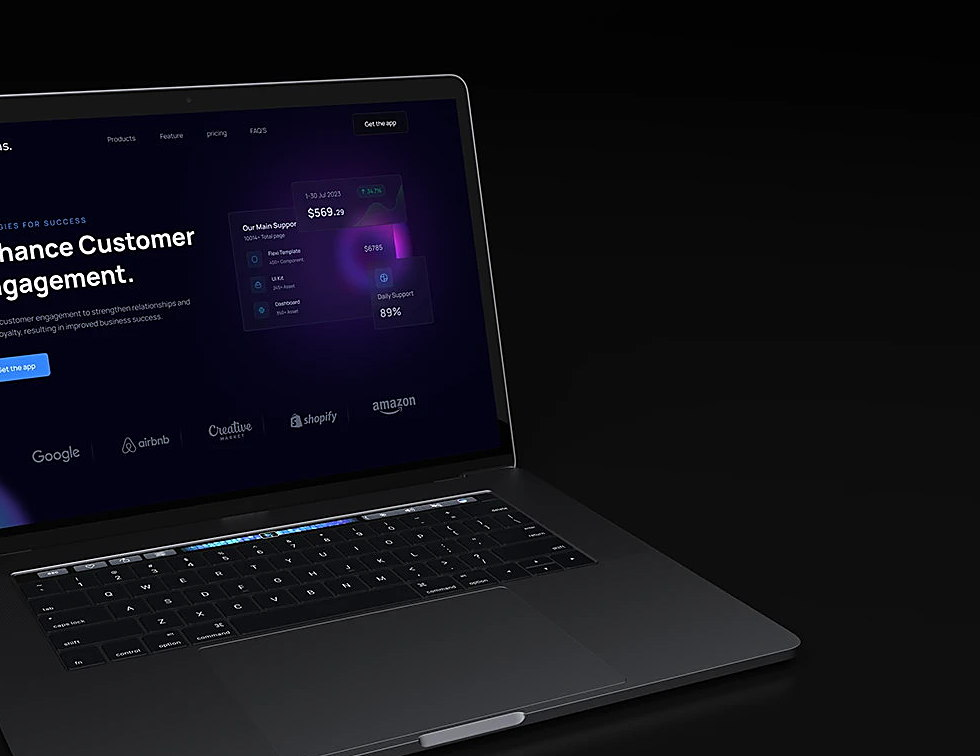

The dark edition
Deep focus for support teams working late shifts — priority threads, nightly digests and SLA guardrails.

Built for night shift
What changed while you were away.
Escalations surfaced automatically.
Deadlines tracked without the nagging.